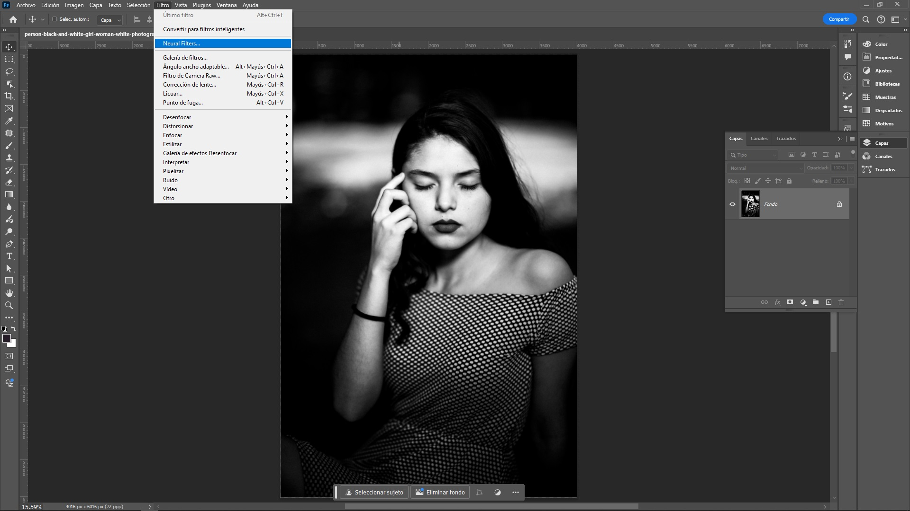
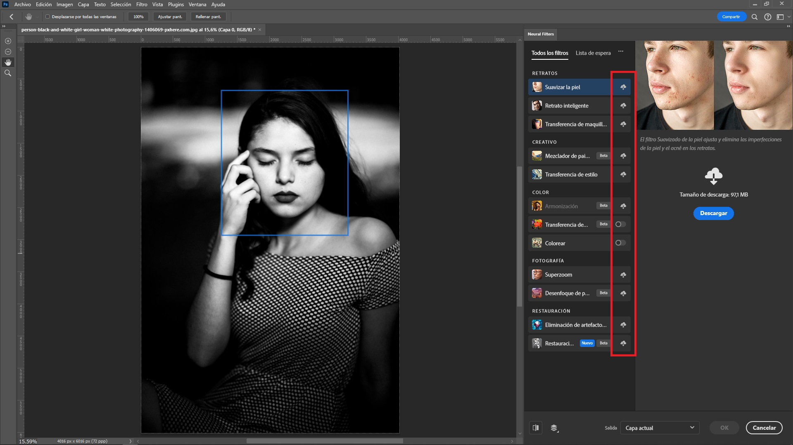
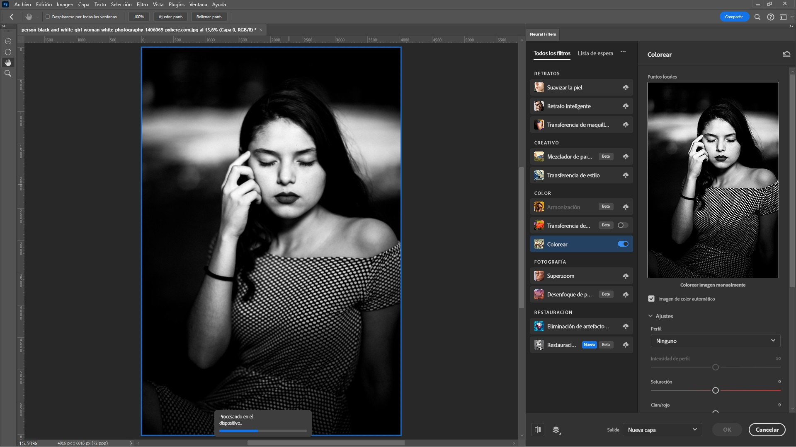
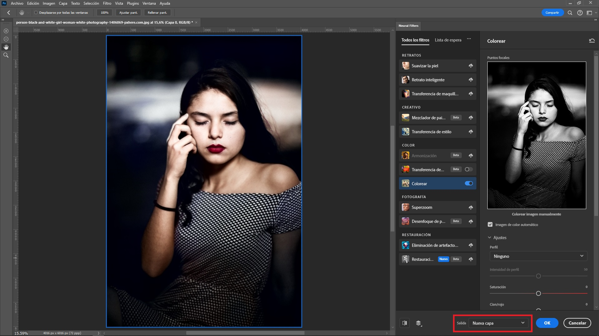
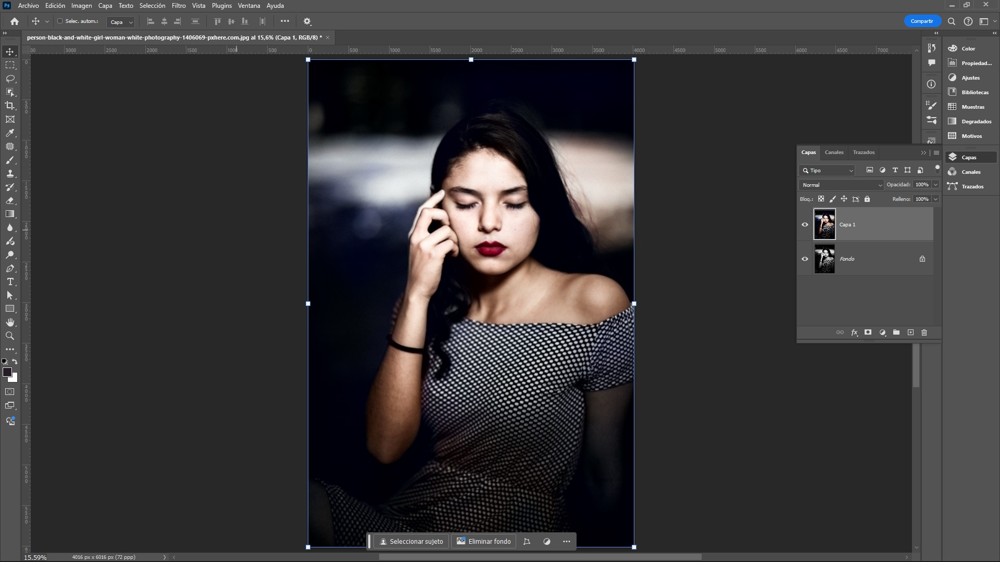

Los filtros neurales en Photoshop son una herramienta que
permite aplicar efectos avanzados de inteligencia artificial
(IA) a las imágenes de manera sencilla. Estos filtros utilizan
redes neuronales para realizar tareas complejas de edición de
fotos que antes requerían mucho tiempo o conocimientos
técnicos avanzados. Algunos de los filtros más destacados
incluyen:
Retrato inteligente: Modifica
características faciales como la edad, expresión, dirección
de la mirada, etc., sin necesidad de realizar una edición
manual minuciosa.
Transferencia de estilo:
Permite aplicar el estilo artístico de una imagen a otra,
similar a lo que haría un pintor al replicar un estilo
particular en una obra.
Restauración de fotos: Mejora
imágenes antiguas o dañadas, eliminando arrugas, manchas, y
restaurando detalles perdidos.
Sustitución del cielo: Este
filtro cambia el cielo en una imagen por otro distinto de
forma automática, ajustando la iluminación de la imagen para
que coincida con el nuevo cielo.
Suavizado de piel: Aplica un
suavizado inteligente a la piel, eliminando imperfecciones
de manera natural sin perder detalles importantes.
Profundidad de campo: Crea un
efecto de desenfoque de fondo similar al que se obtiene con
lentes de cámara de alta calidad, simulando una mayor o
menor profundidad de campo.
Estos filtros pueden ajustarse según las necesidades del
usuario, y están diseñados para facilitar el flujo de trabajo
creativo con resultados de alta calidad en poco tiempo.
Filtros Neurales
Para trabajar con los filtros neurales en Photoshop, se pueden
seguir los siguientes pasos:
Abrir una imagen: Primero, se
debe abrir la imagen sobre la que se desea aplicar un filtro
neural.
Acceder a los Filtros Neurales:
Ir a la barra de menú superior y seleccionar:
Filtro > Filtros Neurales >.

Convertir a Filtro Inteligente en Photoshop - Acceso a
Filtros Neurales
Esto abrirá una ventana emergente donde se encuentran los
filtros disponibles.
Convertir a Filtro Inteligente en Photoshop - Filtros
Neurales
Descargar los Filtros (si es necesario): Algunos filtros neurales pueden
no estar instalados por
defecto. Si aparece un ícono de nube al lado del filtro, se
debe hacer clic en él para descargarlo e instalarlo antes de
usarlo.

Convertir a Filtro Inteligente en Photoshop - Descarga
los Filtros
Seleccionar un Filtro:
Seleccionar el filtro deseado haciendo clic en su casilla de
verificación, en este caso el filtro colorizer para
convertir de B/N a Color.

Convertir a Filtro Inteligente en Photoshop -
Selección Filtro
Ajustar los Parámetros: Una vez
seleccionado el filtro, se pueden ajustar sus parámetros
mediante controles deslizantes. Cada filtro ofrece
diferentes opciones de ajuste, como la intensidad, la
dirección o la escala de los efectos.
Vista previa en tiempo real:
Photoshop permite ver cómo los cambios afectarán a la imagen
en tiempo real mientras se ajustan los parámetros del
filtro.
Aplicar el Filtro: Después de
ajustar el filtro a satisfacción, se puede hacer clic en
Aceptar para aplicarlo a la imagen.
Convertir a Filtro Inteligente en Photoshop -
Aplicación un Filtro
Guardar la imagen:

Convertir a Filtro Inteligente en Photoshop - Guardar
imagen
Una vez aplicado el filtro, se puede guardar la imagen
editada en el formato deseado. Si se desea mantener la
imagen original intacta, es recomendable guardar la imagen
nueva en una capa nueva.

Convertir a Filtro Inteligente en Photoshop - Guardar
la imagen Formato Deseado
Los filtros neurales continúan mejorando con cada
actualización de Photoshop, lo que amplía las posibilidades
creativas para los usuarios que buscan realizar ediciones de
manera rápida y con un enfoque más intuitivo.
COMENTARIOS
Si tiene alguna inquietud, duda o ha encontrado algún error, por
favor infórmelo a través del formulario disponible para este
propósito.